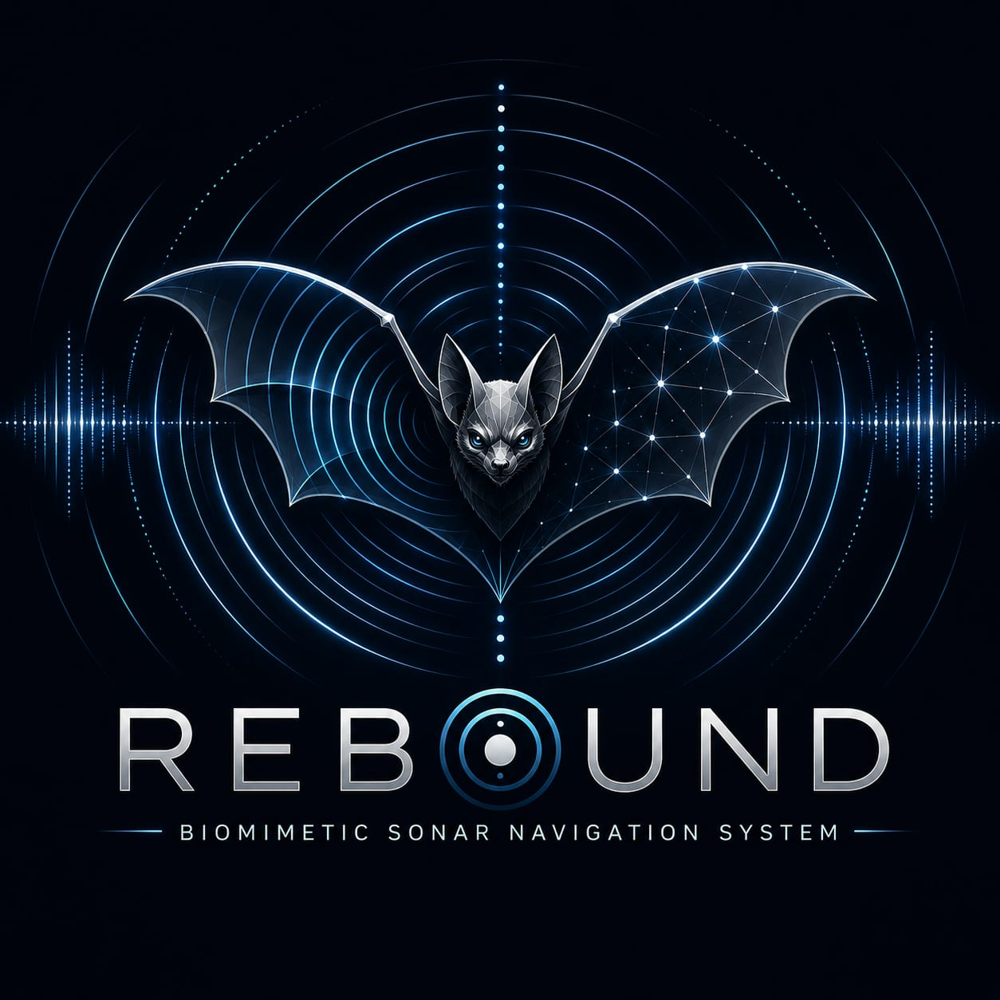

A corridor with no mapUn corredor sin mapa
New buildings turn every intersection into uncertainty when the room cannot announce itself.Los edificios nuevos convierten cada intersección en incertidumbre cuando el espacio no puede anunciarse.
Biomimetic sonar navigationNavegación sonar biomimética
REBOUND turns a smartphone into a new kind of guide: a system that listens to the room, understands what it hears and helps a person move with more confidence through the unknown.REBOUND convierte un smartphone en una nueva clase de guía: un sistema que escucha el espacio, entiende lo que oye y ayuda a una persona a moverse con más confianza por lo desconocido.

The human problemEl problema humano
A cane tells you what is already within reach. A guide dog can help, if one is available. But unfamiliar corridors, doorways and stairs often remain invisible until the last possible moment.Un bastón cuenta qué ya está al alcance. Un perro guía puede ayudar, si está disponible. Pero corredores, puertas y escaleras desconocidos muchas veces siguen siendo invisibles hasta el último momento posible.
New buildings turn every intersection into uncertainty when the room cannot announce itself.Los edificios nuevos convierten cada intersección en incertidumbre cuando el espacio no puede anunciarse.
The information that matters is not only what is touching a person now, but what is waiting ahead.La información importante no es sólo lo que toca a una persona ahora, sino lo que la espera más adelante.
A system designed for independence must be especially careful where a false negative can mean a fall.Un sistema diseñado para la independencia debe ser especialmente cuidadoso cuando un falso negativo puede significar una caída.
Block 2 / InspirationBloque 2 / Inspiración
Bats do not navigate with vision. They emit a signal, listen to its echo and build a picture of the world in complete darkness.Los murciélagos no navegan con visión. Emiten una señal, escuchan su eco y construyen una imagen del mundo en completa oscuridad.
REBOUND begins with one simple question: what if a smartphone could learn to hear the world the way a bat does?REBOUND comienza con una pregunta simple: ¿y si un smartphone pudiera aprender a escuchar el mundo como lo hace un murciélago?
The phone sends a compact acoustic signal into the space.El teléfono envía una señal acústica compacta al espacio.
The microphone captures the reflected sound as it returns.El micrófono captura el sonido reflejado cuando vuelve.
Signal processing and a lightweight model recognize the kind of space ahead.El procesamiento de señal y un modelo liviano reconocen el tipo de espacio adelante.
REBOUND delivers an instruction before the next step is taken.REBOUND entrega una instrucción antes de dar el próximo paso.
Block 3 / What is REBOUNDBloque 3 / Qué es REBOUND
REBOUND combines an acoustic chirp, reflected audio, signal processing and a lightweight neural network to recognize the kind of space in front of a user.REBOUND combina un chirrido acústico, audio reflejado, procesamiento de señal y una red neuronal liviana para reconocer el tipo de espacio frente a una persona.
REBOUND / SONAR
The reflected sound is analyzed to identify open space, a doorway, a corridor, a nearby wall, a corner or stairs. On the validation dataset, REBOUND achieved over ninety-five percent classification accuracy.El sonido reflejado se analiza para identificar espacio abierto, una puerta, un corredor, una pared cercana, una esquina o escaleras. En el dataset de validación, REBOUND alcanzó más de noventa y cinco por ciento de precisión de clasificación.
Block 4 / Qwen + Alibaba CloudBloque 4 / Qwen + Alibaba Cloud
Understanding the person walking through it is the real challenge. REBOUND integrates Alibaba Cloud's Qwen through the DashScope API so its Memory Agent can reason over sonar observations, update what it knows about the user and adjust confidence over time.Entender a la persona que camina por él es el verdadero desafío. REBOUND integra Qwen de Alibaba Cloud a través de la API DashScope para que su Memory Agent pueda razonar sobre las observaciones sonar, actualizar lo que sabe del usuario y ajustar su confianza con el tiempo.
It remembers.Recuerda.
Across sessions, navigation becomes more personal, walk after walk. Alibaba Cloud ECS runs the backend asynchronously, delivering secure, low-latency interaction for multiple concurrent users.Entre sesiones, la navegación se vuelve más personal, caminata tras caminata. Alibaba Cloud ECS ejecuta el backend de forma asíncrona y brinda interacción segura de baja latencia para múltiples usuarios concurrentes.
The five-block narrativeLa narrativa de cinco bloques
The complete REBOUND story: from uncertainty, to echolocation, to a more independent future. The following copy retains the narrative rhythm for voice-over.La historia completa de REBOUND: de la incertidumbre, a la ecolocalización, a un futuro más independiente. El siguiente texto conserva el ritmo narrativo para voz en off.
Every day, millions of blind and visually impaired people step into places like this: a hospital, a subway station, a government building.Cada día, millones de personas ciegas y con discapacidad visual entran a lugares como este: un hospital, una estación de subte, un edificio público.
Every corridor hides uncertainty. Every doorway is a question. Every wall is invisible… until it's too late.Cada corredor esconde incertidumbre. Cada puerta es una pregunta. Cada pared es invisible… hasta que es demasiado tarde.
A white cane tells you what is already within reach. A guide dog helps—if you're lucky enough to have one. But neither can tell you what waits ahead.Un bastón blanco te dice qué ya está al alcance. Un perro guía ayuda—si tenés la suerte de contar con uno. Pero ninguno puede decirte qué te espera adelante.
Nature solved this problem fifty million years ago. They emit a signal, listen to its echo and build a picture of the world… in complete darkness.La naturaleza resolvió este problema hace cincuenta millones de años. Emiten una señal, escuchan su eco y construyen una imagen del mundo… en completa oscuridad.
So we asked a simple question: what if a smartphone could learn to hear the world… the way a bat does?Entonces hicimos una pregunta simple: ¿y si un smartphone pudiera aprender a escuchar el mundo… como lo hace un murciélago?
The phone emits a short chirp. It listens to the echo. Signal processing analyzes the reflected sound, and a lightweight neural network identifies the kind of space ahead—an open space, a doorway, a corridor, a nearby wall, a corner or stairs.El teléfono emite un chirrido corto. Escucha el eco. El procesamiento de señal analiza el sonido reflejado, y una red neuronal liviana identifica el tipo de espacio adelante: espacio abierto, una puerta, un corredor, una pared cercana, una esquina o escaleras.
On our validation dataset, REBOUND achieved over ninety-five percent classification accuracy.En nuestro dataset de validación, REBOUND alcanzó más de noventa y cinco por ciento de precisión de clasificación.
Stairs get a second, independent check. Because one false negative can mean a fall—and that's one decision the system cannot afford to guess.Las escaleras reciben una segunda verificación independiente. Porque un falso negativo puede significar una caída, y esa es una decisión que el sistema no puede permitirse adivinar.
That's why REBOUND integrates Alibaba Cloud's Qwen through the DashScope API. Our Memory Agent does something a conventional navigation system cannot.Por eso REBOUND integra Qwen de Alibaba Cloud a través de la API DashScope. Nuestro Memory Agent hace algo que un sistema de navegación convencional no puede hacer.
It remembers.Recuerda.
Across sessions, it learns how each individual moves through the world. It reasons over what the sonar observes, updates what it knows about the user and adjusts its own confidence over time—so navigation instructions become more personal, walk after walk.A lo largo de las sesiones, aprende cómo cada persona se mueve por el mundo. Razona sobre lo que observa el sonar, actualiza lo que sabe del usuario y ajusta su propia confianza con el tiempo, para que las instrucciones de navegación sean más personales, caminata tras caminata.
Behind that experience, Alibaba Cloud ECS runs the backend asynchronously, delivering secure, low-latency interaction for multiple concurrent users. The more you walk with REBOUND, the better it understands how to guide you.Detrás de esa experiencia, Alibaba Cloud ECS ejecuta el backend de forma asíncrona, brindando interacción segura de baja latencia para múltiples usuarios concurrentes. Cuanto más caminás con REBOUND, mejor entiende cómo guiarte.
Watching someone use REBOUND, you realize this isn't really about machine learning. It isn't about cloud infrastructure. It isn't even about sonar.Al ver a alguien usar REBOUND, entendés que no se trata realmente de machine learning. No se trata de infraestructura cloud. Ni siquiera se trata de sonar.
It's about confidence. It's about taking the next step already knowing you're not walking into the unknown.Se trata de confianza. Se trata de dar el próximo paso sabiendo que no estás caminando hacia lo desconocido.
Technology cannot restore someone's sight. But it can restore certainty. And certainty is the first step toward independence.La tecnología no puede devolverle la vista a alguien. Pero puede devolverle certeza. Y la certeza es el primer paso hacia la independencia.
REBOUND is still a hackathon project. There are limitations—we know them, and we're honest about them. But every technology that changes the world starts as an idea.REBOUND sigue siendo un proyecto de hackathon. Hay limitaciones—las conocemos y somos honestos sobre ellas. Pero cada tecnología que cambia el mundo empieza como una idea.
Today… it learns to listen.
Tomorrow… it could become another sense.
Because everyone deserves to know what lies ahead before they take the next step.Hoy… aprende a escuchar.
Mañana… podría convertirse en otro sentido.
Porque todos merecen saber qué hay adelante antes de dar el próximo paso.
Inspired by nature.
Powered by Alibaba Cloud.
Built for independence.Inspirado en la naturaleza.
Impulsado por Alibaba Cloud.
Construido para la independencia.
This is REBOUND.